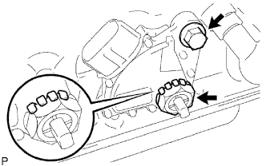

ДАТЧИК ПОЛОЖЕНИЯ ПАРКИНГА / НЕЙТРАЛИ > СНЯТИЕ |
| 1. СНИМИТЕ ДАТЧИК ПОЛОЖЕНИЯ ПАРКИНГА / НЕЙТРАЛИ В СБОРЕ |
|  |
С помощью отвертки загните лепестки стопорной шайбы.
Отверните контргайку и снимите стопорную шайбу.
Выверните болт и снимите датчик положения паркинга/нейтрали.